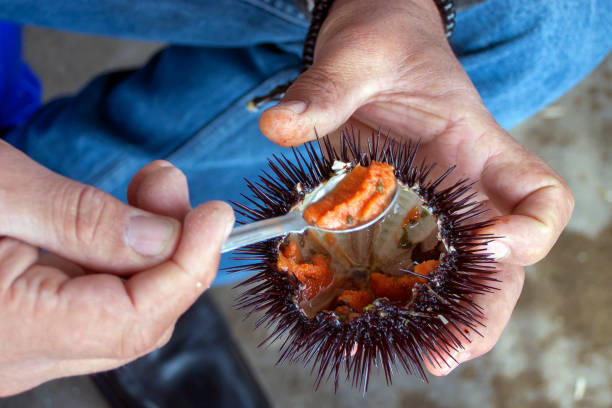
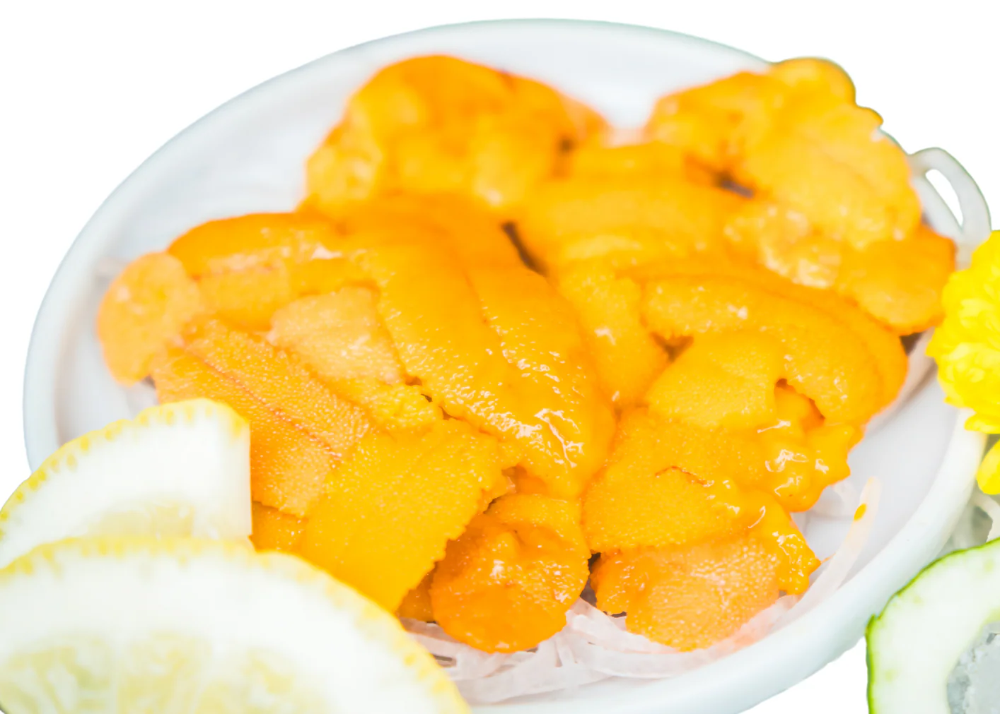
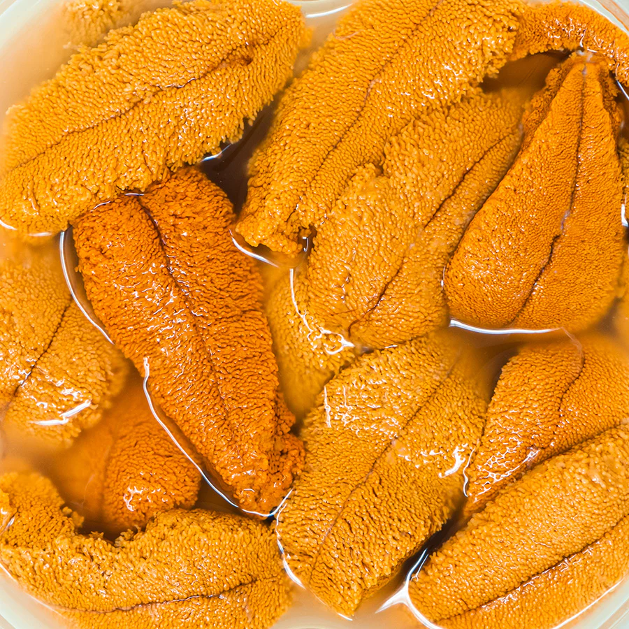

Fresh sea urchin, locally known as “swaki” or “uni,” is a delicacy harvested from the coastal waters of Surigao del Sur. It is recognized for its spiny outer shell and soft, edible interior that contains a rich, creamy roe. The taste is often described as slightly sweet with a briny flavor that reflects the freshness of the sea. It is usually eaten raw or lightly seasoned to preserve its natural taste. The texture is smooth and delicate, making it a unique seafood experience.
The quality of sea urchin depends heavily on freshness, which is why it is often consumed immediately after being harvested. Fishermen carefully open the shell to reveal the bright orange or yellow roe inside. The dish is commonly served with vinegar or calamansi to enhance its flavor. Its distinct taste may be unfamiliar to some, but it is highly appreciated by seafood lovers. Visitors often find it to be a special and authentic coastal delicacy. Overall, fresh sea urchin highlights the richness of marine resources in the region.


Sea urchin consumption in Surigao del Sur dates back to early coastal communities that relied on marine resources for food. Fishermen discovered its nutritional value and incorporated it into their diet. Over time, it became a delicacy enjoyed during gatherings and special occasions. The abundance of sea urchins in local waters contributed to its popularity. Traditional methods of harvesting and preparation have been passed down through generations.
As tourism developed, fresh sea urchin became a highlight for visitors exploring coastal cuisine. It gained recognition as a unique and exotic food experience. Local communities began offering it to tourists as part of their culinary offerings. Efforts have been made to ensure sustainable harvesting practices. The dish continues to represent the connection between people and the sea. Today, it remains a valued part of local food culture.
Fresh sea urchin requires minimal ingredients. The main component is the sea urchin itself. Optional ingredients include vinegar or calamansi. Salt may also be added for taste. These simple additions enhance the flavor.
The quality depends on freshness. Freshly harvested sea urchins provide the best taste. Additional seasonings are minimal to preserve natural flavor. The ingredients are simple and natural. Each component complements the seafood. Overall, the ingredients are straightforward.


To prepare sea urchin, the shell is carefully opened using tools. The edible roe inside is removed gently. It is cleaned to remove unwanted parts. The roe is then placed in a serving dish. It is ready to eat immediately.
Optional seasonings such as vinegar or calamansi can be added. The dish is served fresh for best taste. It requires no cooking. The preparation is quick and simple. Care must be taken when handling the shell. Overall, the process is easy but delicate.